01.1 // Monolithic Microcement
Open-Concept Gallery & Living Floor
Continuous waterproof mineral overlay linking floors, counters, and display plinths without expansion joints or transition strips.
Every project below was hand-applied by Organic Finishes LLC—from seamless microcement wet rooms and commercial storefronts to statement fireplaces, built-in shelving, and rendered brick masonry.
Continuous waterproof mineral overlay linking floors, counters, and display plinths without expansion joints or transition strips.

Hand-troweled slaked lime plaster forming monolithic sculpted mantle angles and subtle mineral mottling.

Zero-grout 2–3 mm waterproof microcement system unifying shower floor, walls, and recessed niche.

Floor-to-ceiling custom plaster fireplace surround in warm earth tones with subtle trowel movement and timber mantel.
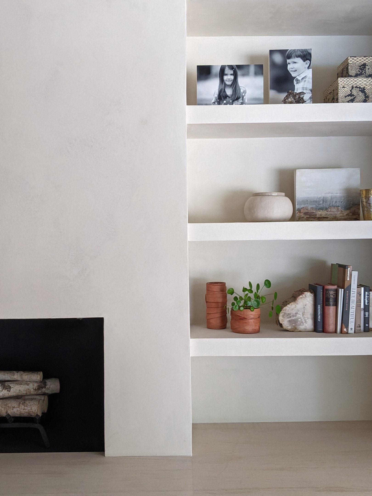
Unified custom lime plaster wrap connecting the central hearth and flanking built-in shelving.

Zero-VOC breathable mineral plaster walls that regulate indoor humidity and soften natural daylight.

Custom built-in shelving wrapped seamlessly in mineral plaster for a continuous sculptural profile.

Authentic hydraulic lime compressed with river stones and sealed with black olive oil soap for a groutless wet room.
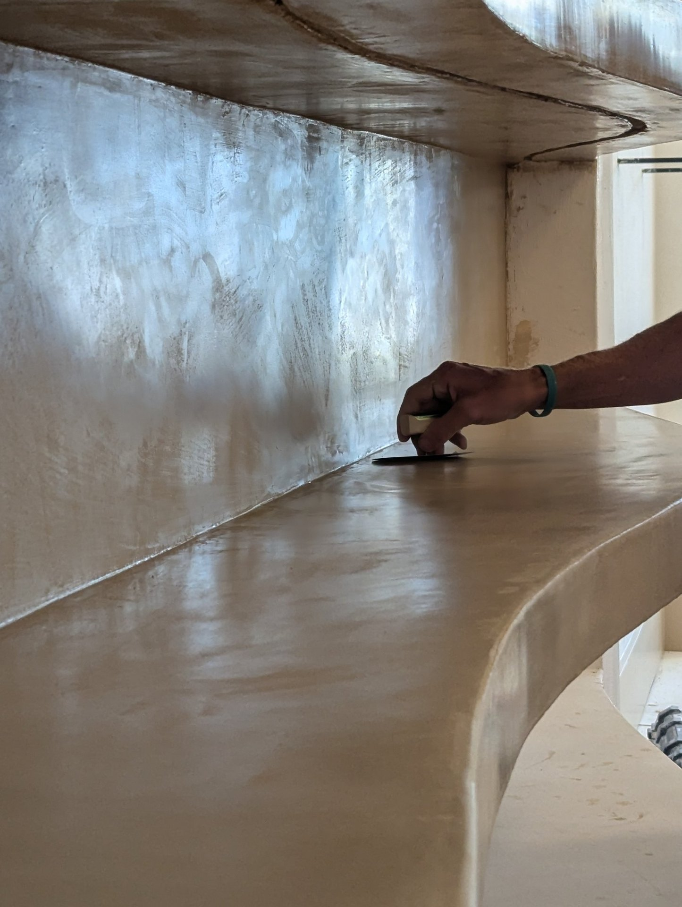
High-luster water-repellent lime plaster hand-compressed over curved architectural contours.
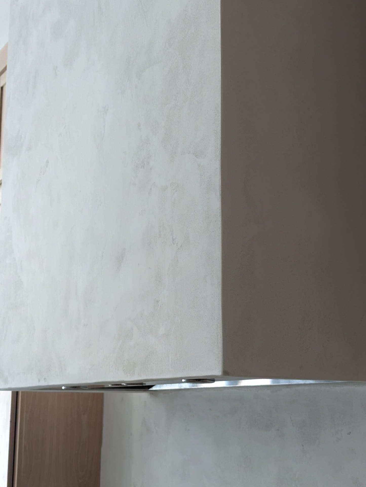
Custom kitchen range hood wrapped in smooth matte slaked lime plaster with crisp mitered corners.

Lightweight mineral plaster application over framed kitchen ventilation hood with subtle organic movement.

Close-up view of 2–3 mm continuous microcement countertop edge exhibiting dense mineral compaction and velvety matte sealer.

Macro test demonstrating complete water repellency on our multi-coat polyurethane-sealed microcement finish.
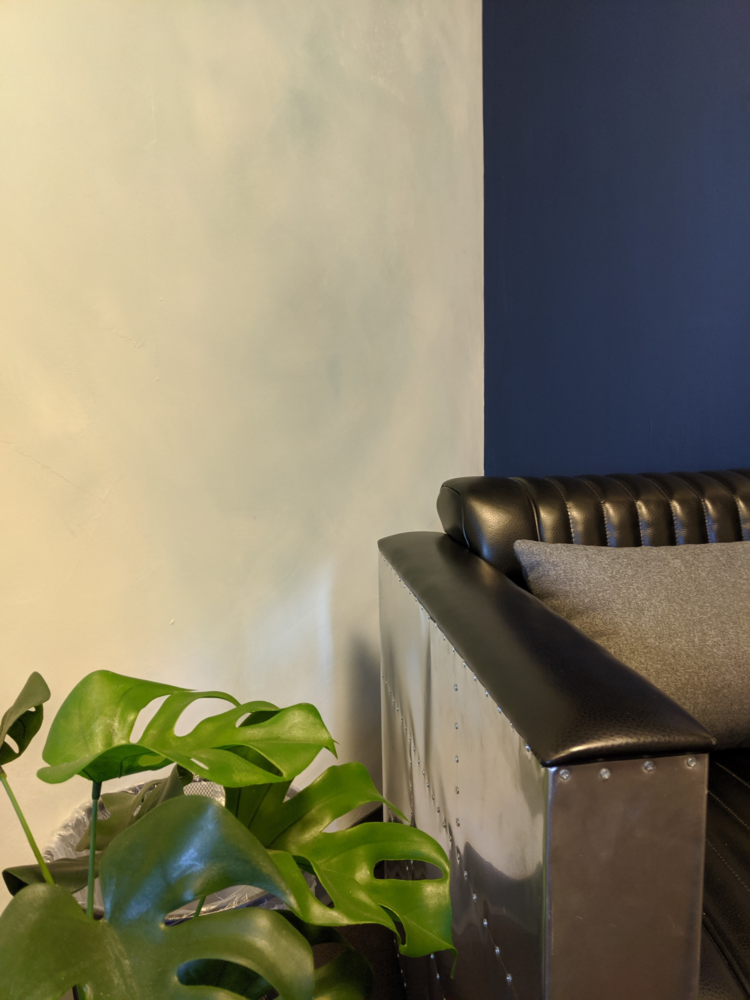
Warm slaked lime and raw clay plaster transition contrasting against deep architectural millwork.
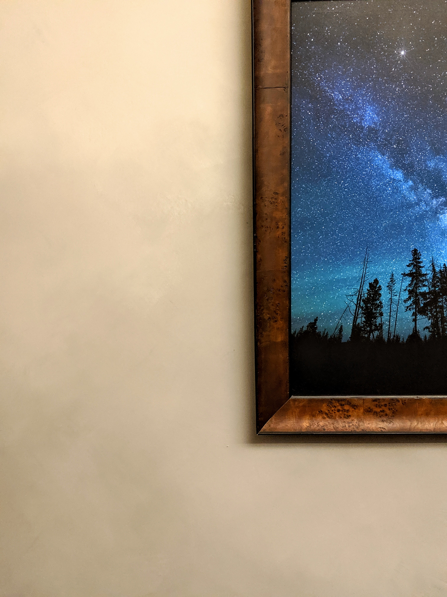
Traditional slaked lime wash applied with natural bristle strokes for soft, velvety light refraction.

overhead beam and ceiling coffers enveloped in continuous hand-troweled mineral plaster.

Softly radiused archway corner hand-formed in textured mineral plaster, catching grazing natural daylight.

Authentic reactive iron and bronze mineral coating aged by hand for dramatic architectural contrast.
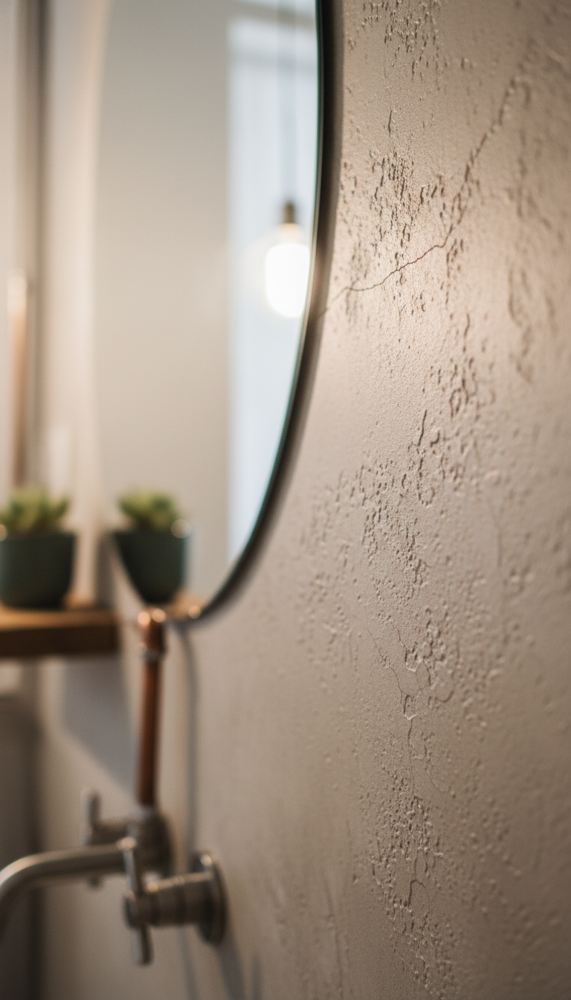
Moisture-breathable pitted limestone plaster texture behind custom brass fixtures and vanity mirror.
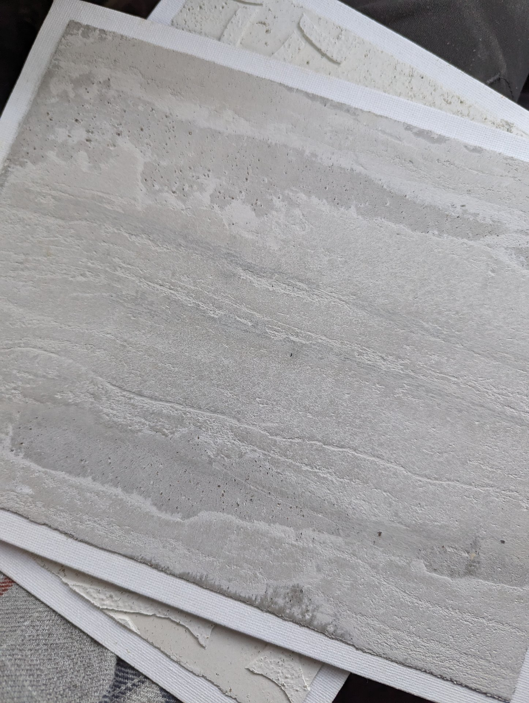
Layered physical specification boards showcasing linear travertine texture and smooth microcement tone options.
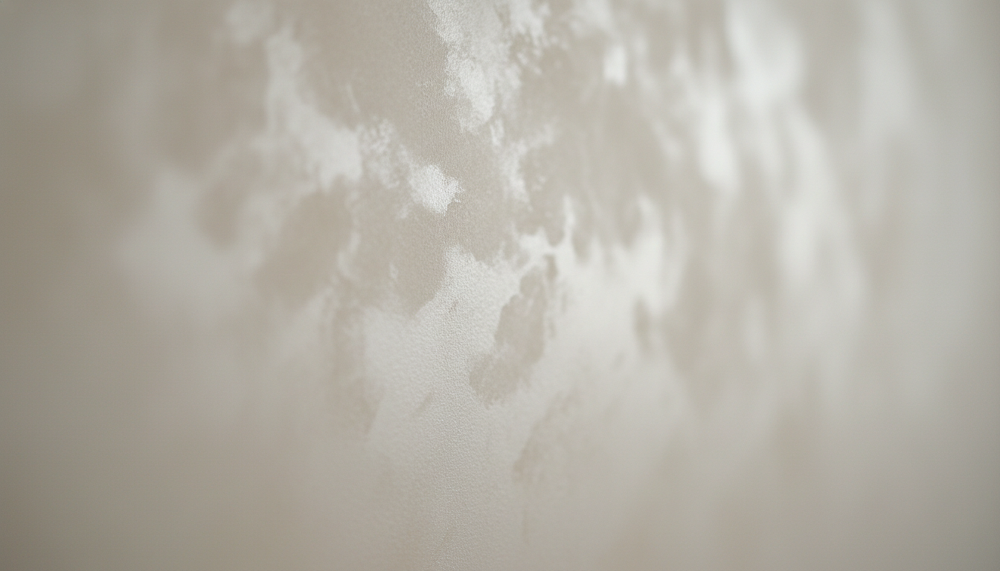
Crushed marble Marmorino compressed with a steel trowel to reflect dappled natural window light.

Custom aggregate lime plaster troweled to replicate weathered natural travertine stone.
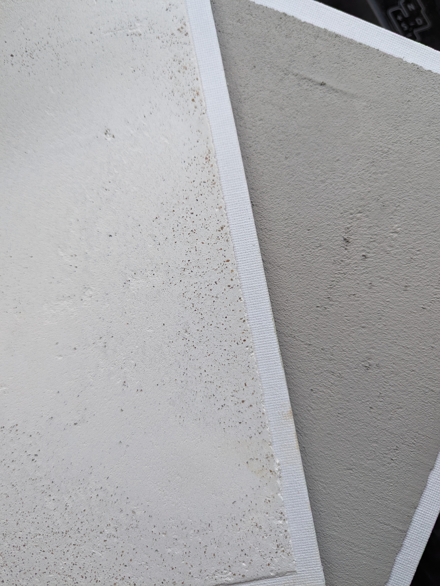
Side-by-side physical sample comparison of fine satin wall microcement and medium-grit structural floor overlay.
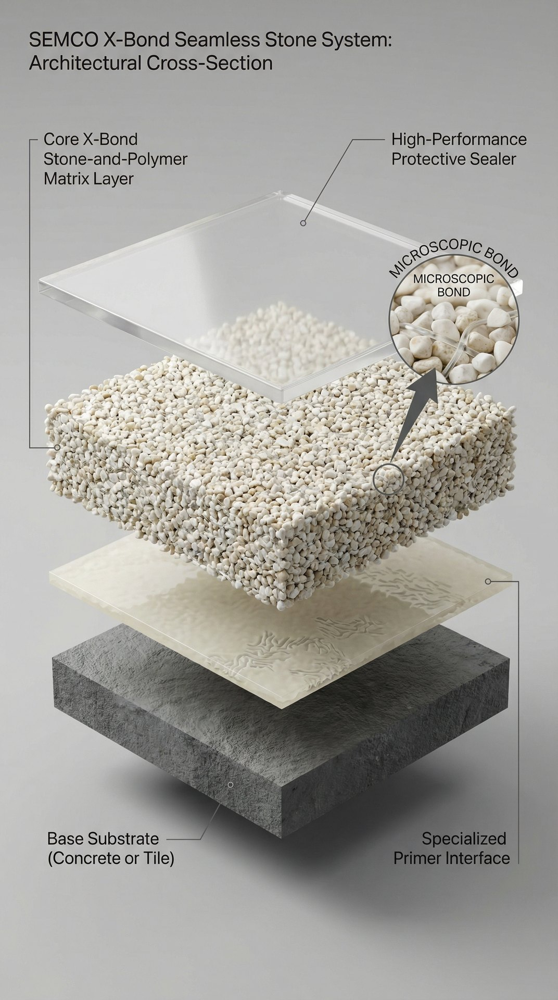
Architectural cross-section illustrating substrate primer, mesh-reinforced base, mineral coats, and 2K sealer.

Stepped geometric plaster shelf and cantilevered hearth hand-troweled in continuous warm limestone plaster with artisan vessel reveal.

Flared kitchen range hood finished in deep charcoal Venetian Marmorino plaster with subtle mottled light play over cooktop.

Hand-sculpted budding botanical branch sculpted directly in pure breathable slaked lime plaster, catching natural ambient daylight.
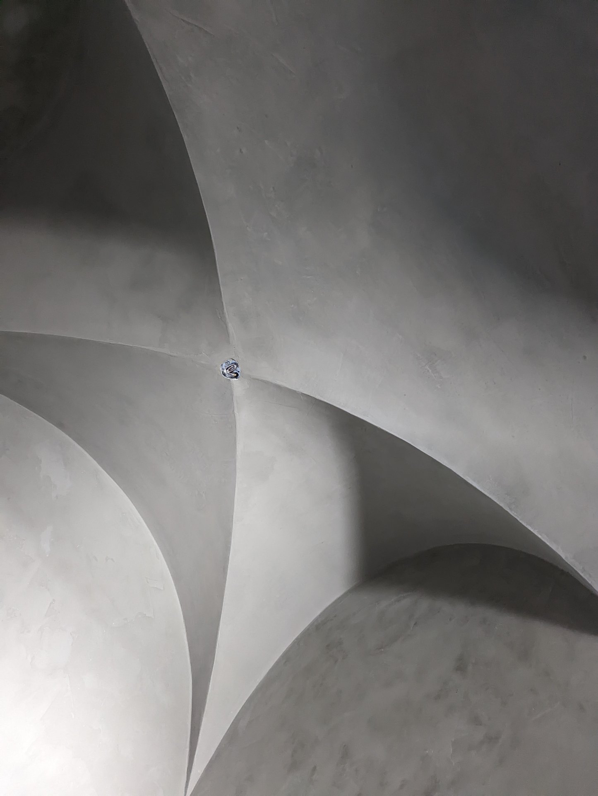
Compound curved barrel vaults meeting seamlessly at intersecting groin arches with continuous hand-troweled mineral plaster.

High-burnish Venetian plaster with authentic mineral veining, hand-compressed to recreate classical Italian faux marbre.
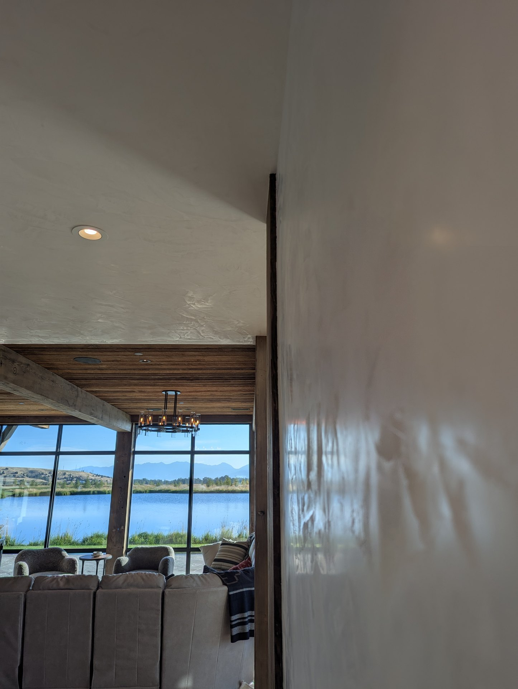
Polished mineral plaster wall reflecting panoramic mountain water views in a custom Montana luxury estate.
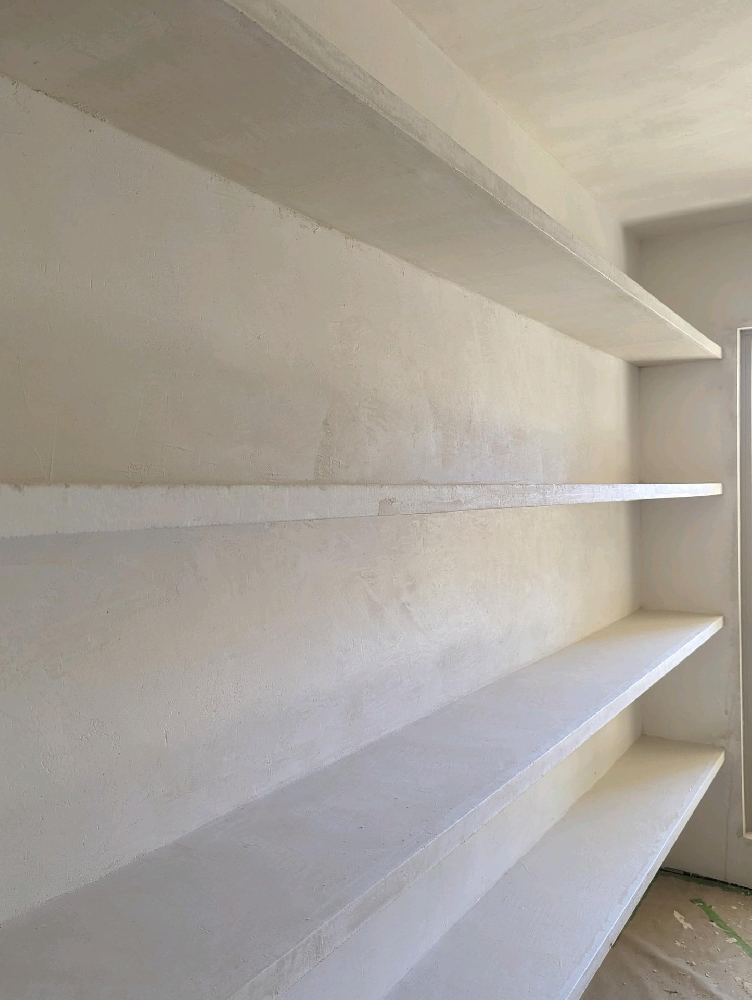
Cantilevered open shelving enveloped seamlessly into the room's plaster walls without visible brackets or joints.

Physical specification fan array showing raked stone, embossed relief, warm limestone cream, and smooth microcement tones on seamless floor.